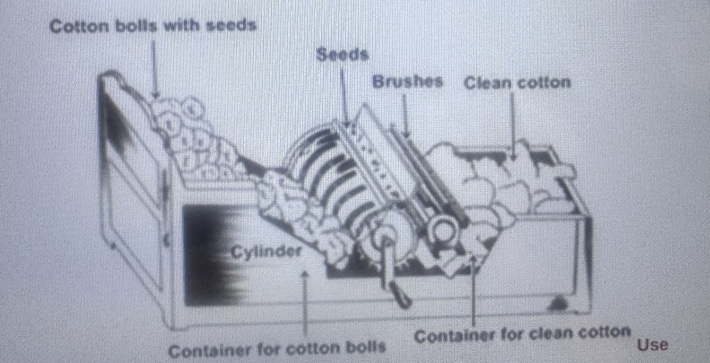
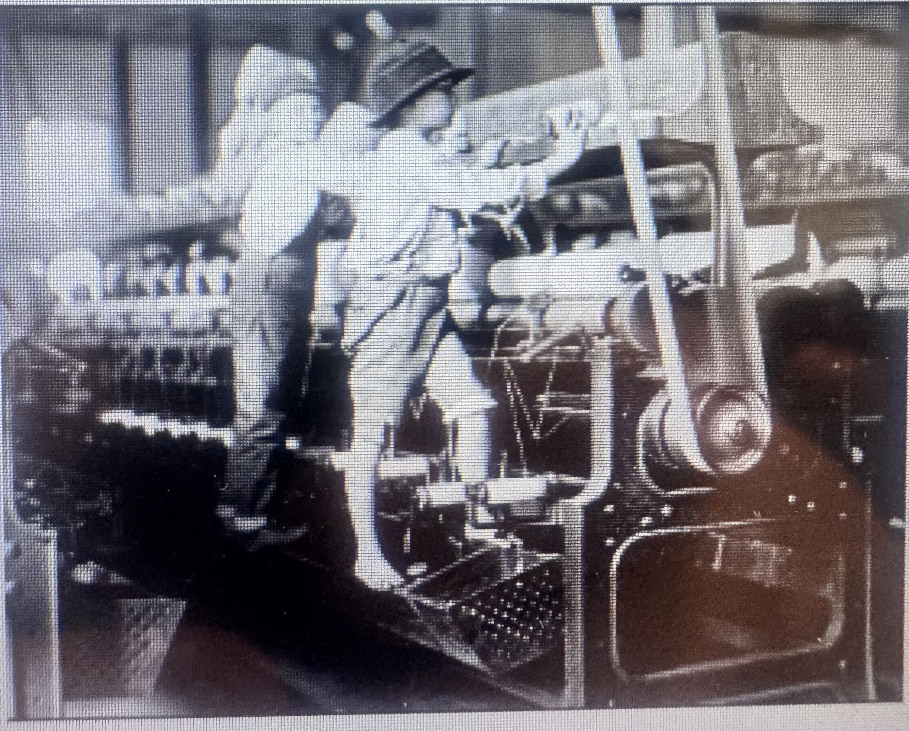
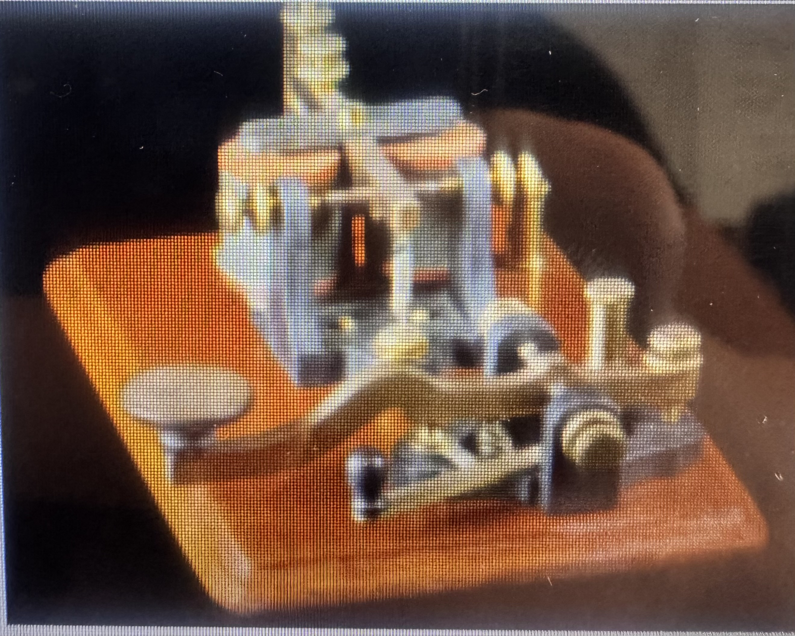

Inventions Summary
There were many different types of inventions that helped people by producing goods, removing or separating parts, and making transportation faster than any other human could. There were many different kinds of inventions that did other things faster than humans but those weren’t as important. Some of them were important to farmers and businessmen. The most famous kinds of inventions during the Market revolution were the Cotton gin, textile machinery, steamboat, and telegraph.
The Cotton Gin

Diagram of the cotton gin, showing the process of removing seeds from cotton.
The Cotton gin was a famous piece of technology that made it faster and easier for removing the seeds from the cotton. This allowed more cotton to be produced and sold to the economy. Making more money in the economy and trade increasing between the South and North.
The problem with the cotton gin was that it was highly demanding for it to be used for more enslaved workers. The reason is that the plantation owners wanted to grow and harvest more of the cotton to trade for goods. So the cotton gin was used for more groups of slaves using the cotton gin to produce more cotton then to be traded.
The Textile Machine

Workers operating dangerous textile mill spinning machinery during long factory shifts.
Textile machinery was great for making it faster and easier to turn the cotton from the cotton gin into cloth. There were many different types of textile machinery during the market revolution. Some of them can spin multiple threads at once, weave yarn to cloth, and spin cotton fibers. This helped the economy by producing more clothing for the poor and fabric being cheaper.
But the labor of these textile factories was that the work of weaving these threads in spinning machinery was dangerous. And the long hours they had to face in the factory. Even little children worked in these dangerous and long hour factories. The condition of the children and adults would cause illnesses and physical injuries while working.
The Telegraph

Early electrical telegraph key used for sending Morse code messages across long distances.
The telegraph was one of the most interesting and important inventions during the market revolution. It allows people to send messages over long distances by using electrical signals. This way, it made communication faster and easier rather than sending a message.
The interesting part of the telegraph was that it was like sending morse code of dots and dashes of messages to people. This invention was very important because not only it allowed communication to be faster, but a great use for sending messages faster to businesses, railroad workers, and more.